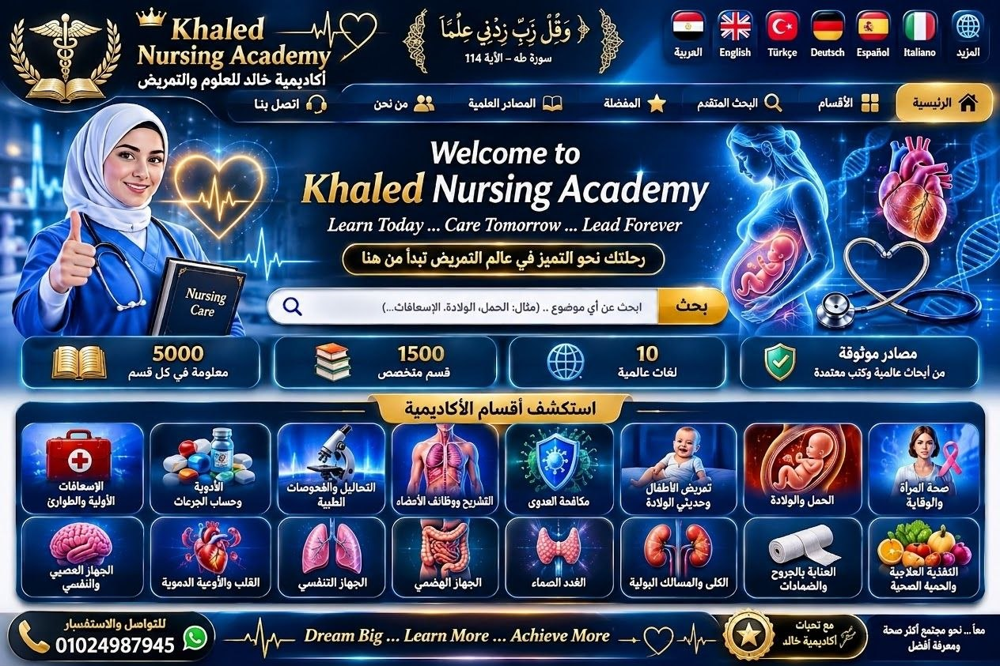

🌐
🇸🇦 العربية
🇸🇦
العربية
🇺🇸
English
🇫🇷
Français
🇪🇸
Español
🇩🇪
Deutsch
🇹🇷
Türkçe
🇷🇺
Русский
🇮🇹
Italiano
🇵🇹
Português
🇮🇩
Bahasa Indonesia

📋
All
🩺
أساسيات التمريض
📈
العلامات الحيوية والتقييم
💉
الإجراءات التمريضية
🖥️
الأجهزة والمعدات الطبية
💊
الأدوية والعقاقير
🚑
الطوارئ والإسعافات الأولية
🏥
العناية المركزة والعمليات
🦴
التشريح البشري
❤️
وظائف الأعضاء والفسيولوجيا
🦠
الأمراض المعدية والمناعة
🫁
الأمراض الباطنية
☢️
الأشعة والفحوصات التشخيصية
🧪
التحاليل الطبية
🩹
التخصصات الطبية والجراحية
👶
تمريض الأطفال وحديثي الولادة
🧠
الصحة النفسية والتأهيل
👁️
الأسنان والعيون والجلدية
📊
الإدارة والجودة والتكنولوجيا الطبية
🥗
التغذية والصحة العامة
🤰
صحة الأم والولادة
1
درس 1 - أساسيات التمريض
أساسيات التمريض
2
درس 2 - العلامات الحيوية والتقييم
العلامات الحيوية والتقييم
3
درس 3 - الإجراءات التمريضية
الإجراءات التمريضية
4
درس 4 - الأجهزة والمعدات الطبية
الأجهزة والمعدات الطبية
5
درس 5 - الأدوية والعقاقير
الأدوية والعقاقير
6
درس 6 - الطوارئ والإسعافات الأولية
الطوارئ والإسعافات الأولية
7
درس 7 - العناية المركزة والعمليات
العناية المركزة والعمليات
8
درس 8 - التشريح البشري
التشريح البشري
9
درس 9 - وظائف الأعضاء والفسيولوجيا
وظائف الأعضاء والفسيولوجيا
10
درس 10 - الأمراض المعدية والمناعة
الأمراض المعدية والمناعة
11
درس 11 - الأمراض الباطنية
الأمراض الباطنية
12
درس 12 - الأشعة والفحوصات التشخيصية
الأشعة والفحوصات التشخيصية
13
درس 13 - التحاليل الطبية
التحاليل الطبية
14
درس 14 - التخصصات الطبية والجراحية
التخصصات الطبية والجراحية
15
درس 15 - تمريض الأطفال وحديثي الولادة
تمريض الأطفال وحديثي الولادة
16
درس 16 - الصحة النفسية والتأهيل
الصحة النفسية والتأهيل
17
درس 17 - الأسنان والعيون والجلدية
الأسنان والعيون والجلدية
18
درس 18 - الإدارة والجودة والتكنولوجيا الطبية
الإدارة والجودة والتكنولوجيا الطبية
19
درس 19 - التغذية والصحة العامة
التغذية والصحة العامة
20
درس 20 - صحة الأم والولادة
صحة الأم والولادة
21
درس 21 - أساسيات التمريض
أساسيات التمريض
22
درس 22 - العلامات الحيوية والتقييم
العلامات الحيوية والتقييم
23
درس 23 - الإجراءات التمريضية
الإجراءات التمريضية
24
درس 24 - الأجهزة والمعدات الطبية
الأجهزة والمعدات الطبية
25
درس 25 - الأدوية والعقاقير
الأدوية والعقاقير
26
درس 26 - الطوارئ والإسعافات الأولية
الطوارئ والإسعافات الأولية
27
درس 27 - العناية المركزة والعمليات
العناية المركزة والعمليات
28
درس 28 - التشريح البشري
التشريح البشري
29
درس 29 - وظائف الأعضاء والفسيولوجيا
وظائف الأعضاء والفسيولوجيا
30
درس 30 - الأمراض المعدية والمناعة
الأمراض المعدية والمناعة
31
درس 31 - الأمراض الباطنية
الأمراض الباطنية
32
درس 32 - الأشعة والفحوصات التشخيصية
الأشعة والفحوصات التشخيصية
33
درس 33 - التحاليل الطبية
التحاليل الطبية
34
درس 34 - التخصصات الطبية والجراحية
التخصصات الطبية والجراحية
35
درس 35 - تمريض الأطفال وحديثي الولادة
تمريض الأطفال وحديثي الولادة
36
درس 36 - الصحة النفسية والتأهيل
الصحة النفسية والتأهيل
37
درس 37 - الأسنان والعيون والجلدية
الأسنان والعيون والجلدية
38
درس 38 - الإدارة والجودة والتكنولوجيا الطبية
الإدارة والجودة والتكنولوجيا الطبية
39
درس 39 - التغذية والصحة العامة
التغذية والصحة العامة
40
درس 40 - صحة الأم والولادة
صحة الأم والولادة
41
درس 41 - أساسيات التمريض
أساسيات التمريض
42
درس 42 - العلامات الحيوية والتقييم
العلامات الحيوية والتقييم
43
درس 43 - الإجراءات التمريضية
الإجراءات التمريضية
44
درس 44 - الأجهزة والمعدات الطبية
الأجهزة والمعدات الطبية
45
درس 45 - الأدوية والعقاقير
الأدوية والعقاقير
46
درس 46 - الطوارئ والإسعافات الأولية
الطوارئ والإسعافات الأولية
47
درس 47 - العناية المركزة والعمليات
العناية المركزة والعمليات
48
درس 48 - التشريح البشري
التشريح البشري
49
درس 49 - وظائف الأعضاء والفسيولوجيا
وظائف الأعضاء والفسيولوجيا
50
درس 50 - الأمراض المعدية والمناعة
الأمراض المعدية والمناعة
51
درس 51 - الأمراض الباطنية
الأمراض الباطنية
52
درس 52 - الأشعة والفحوصات التشخيصية
الأشعة والفحوصات التشخيصية
53
درس 53 - التحاليل الطبية
التحاليل الطبية
54
درس 54 - التخصصات الطبية والجراحية
التخصصات الطبية والجراحية
55
درس 55 - تمريض الأطفال وحديثي الولادة
تمريض الأطفال وحديثي الولادة
56
درس 56 - الصحة النفسية والتأهيل
الصحة النفسية والتأهيل
57
درس 57 - الأسنان والعيون والجلدية
الأسنان والعيون والجلدية
58
درس 58 - الإدارة والجودة والتكنولوجيا الطبية
الإدارة والجودة والتكنولوجيا الطبية
59
درس 59 - التغذية والصحة العامة
التغذية والصحة العامة
60
درس 60 - صحة الأم والولادة
صحة الأم والولادة
61
درس 61 - أساسيات التمريض
أساسيات التمريض
62
درس 62 - العلامات الحيوية والتقييم
العلامات الحيوية والتقييم
63
درس 63 - الإجراءات التمريضية
الإجراءات التمريضية
64
درس 64 - الأجهزة والمعدات الطبية
الأجهزة والمعدات الطبية
65
درس 65 - الأدوية والعقاقير
الأدوية والعقاقير
66
درس 66 - الطوارئ والإسعافات الأولية
الطوارئ والإسعافات الأولية
67
درس 67 - العناية المركزة والعمليات
العناية المركزة والعمليات
68
درس 68 - التشريح البشري
التشريح البشري
69
درس 69 - وظائف الأعضاء والفسيولوجيا
وظائف الأعضاء والفسيولوجيا
70
درس 70 - الأمراض المعدية والمناعة
الأمراض المعدية والمناعة
71
درس 71 - الأمراض الباطنية
الأمراض الباطنية
72
درس 72 - الأشعة والفحوصات التشخيصية
الأشعة والفحوصات التشخيصية
73
درس 73 - التحاليل الطبية
التحاليل الطبية
74
درس 74 - التخصصات الطبية والجراحية
التخصصات الطبية والجراحية
75
درس 75 - تمريض الأطفال وحديثي الولادة
تمريض الأطفال وحديثي الولادة
76
درس 76 - الصحة النفسية والتأهيل
الصحة النفسية والتأهيل
77
درس 77 - الأسنان والعيون والجلدية
الأسنان والعيون والجلدية
78
درس 78 - الإدارة والجودة والتكنولوجيا الطبية
الإدارة والجودة والتكنولوجيا الطبية
79
درس 79 - التغذية والصحة العامة
التغذية والصحة العامة
80
درس 80 - صحة الأم والولادة
صحة الأم والولادة
81
درس 81 - أساسيات التمريض
أساسيات التمريض
82
درس 82 - العلامات الحيوية والتقييم
العلامات الحيوية والتقييم
83
درس 83 - الإجراءات التمريضية
الإجراءات التمريضية
84
درس 84 - الأجهزة والمعدات الطبية
الأجهزة والمعدات الطبية
85
درس 85 - الأدوية والعقاقير
الأدوية والعقاقير
86
درس 86 - الطوارئ والإسعافات الأولية
الطوارئ والإسعافات الأولية
87
درس 87 - العناية المركزة والعمليات
العناية المركزة والعمليات
88
درس 88 - التشريح البشري
التشريح البشري
89
درس 89 - وظائف الأعضاء والفسيولوجيا
وظائف الأعضاء والفسيولوجيا
90
درس 90 - الأمراض المعدية والمناعة
الأمراض المعدية والمناعة
91
درس 91 - الأمراض الباطنية
الأمراض الباطنية
92
درس 92 - الأشعة والفحوصات التشخيصية
الأشعة والفحوصات التشخيصية
93
درس 93 - التحاليل الطبية
التحاليل الطبية
94
درس 94 - التخصصات الطبية والجراحية
التخصصات الطبية والجراحية
95
درس 95 - تمريض الأطفال وحديثي الولادة
تمريض الأطفال وحديثي الولادة
96
درس 96 - الصحة النفسية والتأهيل
الصحة النفسية والتأهيل
97
درس 97 - الأسنان والعيون والجلدية
الأسنان والعيون والجلدية
98
درس 98 - الإدارة والجودة والتكنولوجيا الطبية
الإدارة والجودة والتكنولوجيا الطبية
99
درس 99 - التغذية والصحة العامة
التغذية والصحة العامة
100
درس 100 - صحة الأم والولادة
صحة الأم والولادة
101
درس 101 - أساسيات التمريض
أساسيات التمريض
102
درس 102 - العلامات الحيوية والتقييم
العلامات الحيوية والتقييم
103
درس 103 - الإجراءات التمريضية
الإجراءات التمريضية
104
درس 104 - الأجهزة والمعدات الطبية
الأجهزة والمعدات الطبية
105
درس 105 - الأدوية والعقاقير
الأدوية والعقاقير
106
درس 106 - الطوارئ والإسعافات الأولية
الطوارئ والإسعافات الأولية
107
درس 107 - العناية المركزة والعمليات
العناية المركزة والعمليات
108
درس 108 - التشريح البشري
التشريح البشري
109
درس 109 - وظائف الأعضاء والفسيولوجيا
وظائف الأعضاء والفسيولوجيا
110
درس 110 - الأمراض المعدية والمناعة
الأمراض المعدية والمناعة
111
درس 111 - الأمراض الباطنية
الأمراض الباطنية
112
درس 112 - الأشعة والفحوصات التشخيصية
الأشعة والفحوصات التشخيصية
113
درس 113 - التحاليل الطبية
التحاليل الطبية
114
درس 114 - التخصصات الطبية والجراحية
التخصصات الطبية والجراحية
115
درس 115 - تمريض الأطفال وحديثي الولادة
تمريض الأطفال وحديثي الولادة
116
درس 116 - الصحة النفسية والتأهيل
الصحة النفسية والتأهيل
117
درس 117 - الأسنان والعيون والجلدية
الأسنان والعيون والجلدية
118
درس 118 - الإدارة والجودة والتكنولوجيا الطبية
الإدارة والجودة والتكنولوجيا الطبية
119
درس 119 - التغذية والصحة العامة
التغذية والصحة العامة
120
درس 120 - صحة الأم والولادة
صحة الأم والولادة
121
درس 121 - أساسيات التمريض
أساسيات التمريض
122
درس 122 - العلامات الحيوية والتقييم
العلامات الحيوية والتقييم
123
درس 123 - الإجراءات التمريضية
الإجراءات التمريضية
124
درس 124 - الأجهزة والمعدات الطبية
الأجهزة والمعدات الطبية
125
درس 125 - الأدوية والعقاقير
الأدوية والعقاقير
126
درس 126 - الطوارئ والإسعافات الأولية
الطوارئ والإسعافات الأولية
127
درس 127 - العناية المركزة والعمليات
العناية المركزة والعمليات
128
درس 128 - التشريح البشري
التشريح البشري
129
درس 129 - وظائف الأعضاء والفسيولوجيا
وظائف الأعضاء والفسيولوجيا
130
درس 130 - الأمراض المعدية والمناعة
الأمراض المعدية والمناعة
131
درس 131 - الأمراض الباطنية
الأمراض الباطنية
132
درس 132 - الأشعة والفحوصات التشخيصية
الأشعة والفحوصات التشخيصية
133
درس 133 - التحاليل الطبية
التحاليل الطبية
134
درس 134 - التخصصات الطبية والجراحية
التخصصات الطبية والجراحية
135
درس 135 - تمريض الأطفال وحديثي الولادة
تمريض الأطفال وحديثي الولادة
136
درس 136 - الصحة النفسية والتأهيل
الصحة النفسية والتأهيل
137
درس 137 - الأسنان والعيون والجلدية
الأسنان والعيون والجلدية
138
درس 138 - الإدارة والجودة والتكنولوجيا الطبية
الإدارة والجودة والتكنولوجيا الطبية
139
درس 139 - التغذية والصحة العامة
التغذية والصحة العامة
140
درس 140 - صحة الأم والولادة
صحة الأم والولادة
141
درس 141 - أساسيات التمريض
أساسيات التمريض
142
درس 142 - العلامات الحيوية والتقييم
العلامات الحيوية والتقييم
143
درس 143 - الإجراءات التمريضية
الإجراءات التمريضية
144
درس 144 - الأجهزة والمعدات الطبية
الأجهزة والمعدات الطبية
145
درس 145 - الأدوية والعقاقير
الأدوية والعقاقير
146
درس 146 - الطوارئ والإسعافات الأولية
الطوارئ والإسعافات الأولية
147
درس 147 - العناية المركزة والعمليات
العناية المركزة والعمليات
148
درس 148 - التشريح البشري
التشريح البشري
149
درس 149 - وظائف الأعضاء والفسيولوجيا
وظائف الأعضاء والفسيولوجيا
150
درس 150 - الأمراض المعدية والمناعة
الأمراض المعدية والمناعة
151
درس 151 - الأمراض الباطنية
الأمراض الباطنية
152
درس 152 - الأشعة والفحوصات التشخيصية
الأشعة والفحوصات التشخيصية
153
درس 153 - التحاليل الطبية
التحاليل الطبية
154
درس 154 - التخصصات الطبية والجراحية
التخصصات الطبية والجراحية
155
درس 155 - تمريض الأطفال وحديثي الولادة
تمريض الأطفال وحديثي الولادة
156
درس 156 - الصحة النفسية والتأهيل
الصحة النفسية والتأهيل
157
درس 157 - الأسنان والعيون والجلدية
الأسنان والعيون والجلدية
158
درس 158 - الإدارة والجودة والتكنولوجيا الطبية
الإدارة والجودة والتكنولوجيا الطبية
159
درس 159 - التغذية والصحة العامة
التغذية والصحة العامة
160
درس 160 - صحة الأم والولادة
صحة الأم والولادة
161
درس 161 - أساسيات التمريض
أساسيات التمريض
162
درس 162 - العلامات الحيوية والتقييم
العلامات الحيوية والتقييم
163
درس 163 - الإجراءات التمريضية
الإجراءات التمريضية
164
درس 164 - الأجهزة والمعدات الطبية
الأجهزة والمعدات الطبية
165
درس 165 - الأدوية والعقاقير
الأدوية والعقاقير
166
درس 166 - الطوارئ والإسعافات الأولية
الطوارئ والإسعافات الأولية
167
درس 167 - العناية المركزة والعمليات
العناية المركزة والعمليات
168
درس 168 - التشريح البشري
التشريح البشري
169
درس 169 - وظائف الأعضاء والفسيولوجيا
وظائف الأعضاء والفسيولوجيا
170
درس 170 - الأمراض المعدية والمناعة
الأمراض المعدية والمناعة
171
درس 171 - الأمراض الباطنية
الأمراض الباطنية
172
درس 172 - الأشعة والفحوصات التشخيصية
الأشعة والفحوصات التشخيصية
173
درس 173 - التحاليل الطبية
التحاليل الطبية
174
درس 174 - التخصصات الطبية والجراحية
التخصصات الطبية والجراحية
175
درس 175 - تمريض الأطفال وحديثي الولادة
تمريض الأطفال وحديثي الولادة
176
درس 176 - الصحة النفسية والتأهيل
الصحة النفسية والتأهيل
177
درس 177 - الأسنان والعيون والجلدية
الأسنان والعيون والجلدية
178
درس 178 - الإدارة والجودة والتكنولوجيا الطبية
الإدارة والجودة والتكنولوجيا الطبية
179
درس 179 - التغذية والصحة العامة
التغذية والصحة العامة
180
درس 180 - صحة الأم والولادة
صحة الأم والولادة
181
درس 181 - أساسيات التمريض
أساسيات التمريض
182
درس 182 - العلامات الحيوية والتقييم
العلامات الحيوية والتقييم
183
درس 183 - الإجراءات التمريضية
الإجراءات التمريضية
184
درس 184 - الأجهزة والمعدات الطبية
الأجهزة والمعدات الطبية
185
درس 185 - الأدوية والعقاقير
الأدوية والعقاقير
186
درس 186 - الطوارئ والإسعافات الأولية
الطوارئ والإسعافات الأولية
187
درس 187 - العناية المركزة والعمليات
العناية المركزة والعمليات
188
درس 188 - التشريح البشري
التشريح البشري
189
درس 189 - وظائف الأعضاء والفسيولوجيا
وظائف الأعضاء والفسيولوجيا
190
درس 190 - الأمراض المعدية والمناعة
الأمراض المعدية والمناعة
191
درس 191 - الأمراض الباطنية
الأمراض الباطنية
192
درس 192 - الأشعة والفحوصات التشخيصية
الأشعة والفحوصات التشخيصية
193
درس 193 - التحاليل الطبية
التحاليل الطبية
194
درس 194 - التخصصات الطبية والجراحية
التخصصات الطبية والجراحية
195
درس 195 - تمريض الأطفال وحديثي الولادة
تمريض الأطفال وحديثي الولادة
196
درس 196 - الصحة النفسية والتأهيل
الصحة النفسية والتأهيل
197
درس 197 - الأسنان والعيون والجلدية
الأسنان والعيون والجلدية
198
درس 198 - الإدارة والجودة والتكنولوجيا الطبية
الإدارة والجودة والتكنولوجيا الطبية
199
درس 199 - التغذية والصحة العامة
التغذية والصحة العامة
200
درس 200 - صحة الأم والولادة
صحة الأم والولادة
201
درس 201 - أساسيات التمريض
أساسيات التمريض
202
درس 202 - العلامات الحيوية والتقييم
العلامات الحيوية والتقييم
203
درس 203 - الإجراءات التمريضية
الإجراءات التمريضية
204
درس 204 - الأجهزة والمعدات الطبية
الأجهزة والمعدات الطبية
205
درس 205 - الأدوية والعقاقير
الأدوية والعقاقير
206
درس 206 - الطوارئ والإسعافات الأولية
الطوارئ والإسعافات الأولية
207
درس 207 - العناية المركزة والعمليات
العناية المركزة والعمليات
208
درس 208 - التشريح البشري
التشريح البشري
209
درس 209 - وظائف الأعضاء والفسيولوجيا
وظائف الأعضاء والفسيولوجيا
210
درس 210 - الأمراض المعدية والمناعة
الأمراض المعدية والمناعة
211
درس 211 - الأمراض الباطنية
الأمراض الباطنية
212
درس 212 - الأشعة والفحوصات التشخيصية
الأشعة والفحوصات التشخيصية
213
درس 213 - التحاليل الطبية
التحاليل الطبية
214
درس 214 - التخصصات الطبية والجراحية
التخصصات الطبية والجراحية
215
درس 215 - تمريض الأطفال وحديثي الولادة
تمريض الأطفال وحديثي الولادة
216
درس 216 - الصحة النفسية والتأهيل
الصحة النفسية والتأهيل
217
درس 217 - الأسنان والعيون والجلدية
الأسنان والعيون والجلدية
218
درس 218 - الإدارة والجودة والتكنولوجيا الطبية
الإدارة والجودة والتكنولوجيا الطبية
219
درس 219 - التغذية والصحة العامة
التغذية والصحة العامة
220
درس 220 - صحة الأم والولادة
صحة الأم والولادة
221
درس 221 - أساسيات التمريض
أساسيات التمريض
222
درس 222 - العلامات الحيوية والتقييم
العلامات الحيوية والتقييم
223
درس 223 - الإجراءات التمريضية
الإجراءات التمريضية
224
درس 224 - الأجهزة والمعدات الطبية
الأجهزة والمعدات الطبية
225
درس 225 - الأدوية والعقاقير
الأدوية والعقاقير
226
درس 226 - الطوارئ والإسعافات الأولية
الطوارئ والإسعافات الأولية
227
درس 227 - العناية المركزة والعمليات
العناية المركزة والعمليات
228
درس 228 - التشريح البشري
التشريح البشري
229
درس 229 - وظائف الأعضاء والفسيولوجيا
وظائف الأعضاء والفسيولوجيا
230
درس 230 - الأمراض المعدية والمناعة
الأمراض المعدية والمناعة
231
درس 231 - الأمراض الباطنية
الأمراض الباطنية
232
درس 232 - الأشعة والفحوصات التشخيصية
الأشعة والفحوصات التشخيصية
233
درس 233 - التحاليل الطبية
التحاليل الطبية
234
درس 234 - التخصصات الطبية والجراحية
التخصصات الطبية والجراحية
235
درس 235 - تمريض الأطفال وحديثي الولادة
تمريض الأطفال وحديثي الولادة
236
درس 236 - الصحة النفسية والتأهيل
الصحة النفسية والتأهيل
237
درس 237 - الأسنان والعيون والجلدية
الأسنان والعيون والجلدية
238
درس 238 - الإدارة والجودة والتكنولوجيا الطبية
الإدارة والجودة والتكنولوجيا الطبية
239
درس 239 - التغذية والصحة العامة
التغذية والصحة العامة
240
درس 240 - صحة الأم والولادة
صحة الأم والولادة
241
درس 241 - أساسيات التمريض
أساسيات التمريض
242
درس 242 - العلامات الحيوية والتقييم
العلامات الحيوية والتقييم
243
درس 243 - الإجراءات التمريضية
الإجراءات التمريضية
244
درس 244 - الأجهزة والمعدات الطبية
الأجهزة والمعدات الطبية
245
درس 245 - الأدوية والعقاقير
الأدوية والعقاقير
246
درس 246 - الطوارئ والإسعافات الأولية
الطوارئ والإسعافات الأولية
247
درس 247 - العناية المركزة والعمليات
العناية المركزة والعمليات
248
درس 248 - التشريح البشري
التشريح البشري
249
درس 249 - وظائف الأعضاء والفسيولوجيا
وظائف الأعضاء والفسيولوجيا
250
درس 250 - الأمراض المعدية والمناعة
الأمراض المعدية والمناعة
251
درس 251 - الأمراض الباطنية
الأمراض الباطنية
252
درس 252 - الأشعة والفحوصات التشخيصية
الأشعة والفحوصات التشخيصية
253
درس 253 - التحاليل الطبية
التحاليل الطبية
254
درس 254 - التخصصات الطبية والجراحية
التخصصات الطبية والجراحية
255
درس 255 - تمريض الأطفال وحديثي الولادة
تمريض الأطفال وحديثي الولادة
256
درس 256 - الصحة النفسية والتأهيل
الصحة النفسية والتأهيل
257
درس 257 - الأسنان والعيون والجلدية
الأسنان والعيون والجلدية
258
درس 258 - الإدارة والجودة والتكنولوجيا الطبية
الإدارة والجودة والتكنولوجيا الطبية
259
درس 259 - التغذية والصحة العامة
التغذية والصحة العامة
260
درس 260 - صحة الأم والولادة
صحة الأم والولادة
261
درس 261 - أساسيات التمريض
أساسيات التمريض
262
درس 262 - العلامات الحيوية والتقييم
العلامات الحيوية والتقييم
263
درس 263 - الإجراءات التمريضية
الإجراءات التمريضية
264
درس 264 - الأجهزة والمعدات الطبية
الأجهزة والمعدات الطبية
265
درس 265 - الأدوية والعقاقير
الأدوية والعقاقير
266
درس 266 - الطوارئ والإسعافات الأولية
الطوارئ والإسعافات الأولية
267
درس 267 - العناية المركزة والعمليات
العناية المركزة والعمليات
268
درس 268 - التشريح البشري
التشريح البشري
269
درس 269 - وظائف الأعضاء والفسيولوجيا
وظائف الأعضاء والفسيولوجيا
270
درس 270 - الأمراض المعدية والمناعة
الأمراض المعدية والمناعة
271
درس 271 - الأمراض الباطنية
الأمراض الباطنية
272
درس 272 - الأشعة والفحوصات التشخيصية
الأشعة والفحوصات التشخيصية
273
درس 273 - التحاليل الطبية
التحاليل الطبية
274
درس 274 - التخصصات الطبية والجراحية
التخصصات الطبية والجراحية
275
درس 275 - تمريض الأطفال وحديثي الولادة
تمريض الأطفال وحديثي الولادة
276
درس 276 - الصحة النفسية والتأهيل
الصحة النفسية والتأهيل
277
درس 277 - الأسنان والعيون والجلدية
الأسنان والعيون والجلدية
278
درس 278 - الإدارة والجودة والتكنولوجيا الطبية
الإدارة والجودة والتكنولوجيا الطبية
279
درس 279 - التغذية والصحة العامة
التغذية والصحة العامة
280
درس 280 - صحة الأم والولادة
صحة الأم والولادة
281
درس 281 - أساسيات التمريض
أساسيات التمريض
282
درس 282 - العلامات الحيوية والتقييم
العلامات الحيوية والتقييم
283
درس 283 - الإجراءات التمريضية
الإجراءات التمريضية
284
درس 284 - الأجهزة والمعدات الطبية
الأجهزة والمعدات الطبية
285
درس 285 - الأدوية والعقاقير
الأدوية والعقاقير
286
درس 286 - الطوارئ والإسعافات الأولية
الطوارئ والإسعافات الأولية
287
درس 287 - العناية المركزة والعمليات
العناية المركزة والعمليات
288
درس 288 - التشريح البشري
التشريح البشري
289
درس 289 - وظائف الأعضاء والفسيولوجيا
وظائف الأعضاء والفسيولوجيا
290
درس 290 - الأمراض المعدية والمناعة
الأمراض المعدية والمناعة
291
درس 291 - الأمراض الباطنية
الأمراض الباطنية
292
درس 292 - الأشعة والفحوصات التشخيصية
الأشعة والفحوصات التشخيصية
293
درس 293 - التحاليل الطبية
التحاليل الطبية
294
درس 294 - التخصصات الطبية والجراحية
التخصصات الطبية والجراحية
295
درس 295 - تمريض الأطفال وحديثي الولادة
تمريض الأطفال وحديثي الولادة
296
درس 296 - الصحة النفسية والتأهيل
الصحة النفسية والتأهيل
297
درس 297 - الأسنان والعيون والجلدية
الأسنان والعيون والجلدية
298
درس 298 - الإدارة والجودة والتكنولوجيا الطبية
الإدارة والجودة والتكنولوجيا الطبية
299
درس 299 - التغذية والصحة العامة
التغذية والصحة العامة
300
درس 300 - صحة الأم والولادة
صحة الأم والولادة
301
درس 301 - أساسيات التمريض
أساسيات التمريض
302
درس 302 - العلامات الحيوية والتقييم
العلامات الحيوية والتقييم
303
درس 303 - الإجراءات التمريضية
الإجراءات التمريضية
304
درس 304 - الأجهزة والمعدات الطبية
الأجهزة والمعدات الطبية
305
درس 305 - الأدوية والعقاقير
الأدوية والعقاقير
306
درس 306 - الطوارئ والإسعافات الأولية
الطوارئ والإسعافات الأولية
307
درس 307 - العناية المركزة والعمليات
العناية المركزة والعمليات
308
درس 308 - التشريح البشري
التشريح البشري
309
درس 309 - وظائف الأعضاء والفسيولوجيا
وظائف الأعضاء والفسيولوجيا
310
درس 310 - الأمراض المعدية والمناعة
الأمراض المعدية والمناعة
311
درس 311 - الأمراض الباطنية
الأمراض الباطنية
312
درس 312 - الأشعة والفحوصات التشخيصية
الأشعة والفحوصات التشخيصية
313
درس 313 - التحاليل الطبية
التحاليل الطبية
314
درس 314 - التخصصات الطبية والجراحية
التخصصات الطبية والجراحية
315
درس 315 - تمريض الأطفال وحديثي الولادة
تمريض الأطفال وحديثي الولادة
316
درس 316 - الصحة النفسية والتأهيل
الصحة النفسية والتأهيل
317
درس 317 - الأسنان والعيون والجلدية
الأسنان والعيون والجلدية
318
درس 318 - الإدارة والجودة والتكنولوجيا الطبية
الإدارة والجودة والتكنولوجيا الطبية
319
درس 319 - التغذية والصحة العامة
التغذية والصحة العامة
320
درس 320 - صحة الأم والولادة
صحة الأم والولادة
321
درس 321 - أساسيات التمريض
أساسيات التمريض
322
درس 322 - العلامات الحيوية والتقييم
العلامات الحيوية والتقييم
323
درس 323 - الإجراءات التمريضية
الإجراءات التمريضية
324
درس 324 - الأجهزة والمعدات الطبية
الأجهزة والمعدات الطبية
325
درس 325 - الأدوية والعقاقير
الأدوية والعقاقير
326
درس 326 - الطوارئ والإسعافات الأولية
الطوارئ والإسعافات الأولية
327
درس 327 - العناية المركزة والعمليات
العناية المركزة والعمليات
328
درس 328 - التشريح البشري
التشريح البشري
329
درس 329 - وظائف الأعضاء والفسيولوجيا
وظائف الأعضاء والفسيولوجيا
330
درس 330 - الأمراض المعدية والمناعة
الأمراض المعدية والمناعة
331
درس 331 - الأمراض الباطنية
الأمراض الباطنية
332
درس 332 - الأشعة والفحوصات التشخيصية
الأشعة والفحوصات التشخيصية
333
درس 333 - التحاليل الطبية
التحاليل الطبية
334
درس 334 - التخصصات الطبية والجراحية
التخصصات الطبية والجراحية
335
درس 335 - تمريض الأطفال وحديثي الولادة
تمريض الأطفال وحديثي الولادة
336
درس 336 - الصحة النفسية والتأهيل
الصحة النفسية والتأهيل
337
درس 337 - الأسنان والعيون والجلدية
الأسنان والعيون والجلدية
338
درس 338 - الإدارة والجودة والتكنولوجيا الطبية
الإدارة والجودة والتكنولوجيا الطبية
339
درس 339 - التغذية والصحة العامة
التغذية والصحة العامة
340
درس 340 - صحة الأم والولادة
صحة الأم والولادة
341
درس 341 - أساسيات التمريض
أساسيات التمريض
342
درس 342 - العلامات الحيوية والتقييم
العلامات الحيوية والتقييم
343
درس 343 - الإجراءات التمريضية
الإجراءات التمريضية
344
درس 344 - الأجهزة والمعدات الطبية
الأجهزة والمعدات الطبية
345
درس 345 - الأدوية والعقاقير
الأدوية والعقاقير
346
درس 346 - الطوارئ والإسعافات الأولية
الطوارئ والإسعافات الأولية
347
درس 347 - العناية المركزة والعمليات
العناية المركزة والعمليات
348
درس 348 - التشريح البشري
التشريح البشري
349
درس 349 - وظائف الأعضاء والفسيولوجيا
وظائف الأعضاء والفسيولوجيا
350
درس 350 - الأمراض المعدية والمناعة
الأمراض المعدية والمناعة
351
درس 351 - الأمراض الباطنية
الأمراض الباطنية
352
درس 352 - الأشعة والفحوصات التشخيصية
الأشعة والفحوصات التشخيصية
353
درس 353 - التحاليل الطبية
التحاليل الطبية
354
درس 354 - التخصصات الطبية والجراحية
التخصصات الطبية والجراحية
355
درس 355 - تمريض الأطفال وحديثي الولادة
تمريض الأطفال وحديثي الولادة
356
درس 356 - الصحة النفسية والتأهيل
الصحة النفسية والتأهيل
357
درس 357 - الأسنان والعيون والجلدية
الأسنان والعيون والجلدية
358
درس 358 - الإدارة والجودة والتكنولوجيا الطبية
الإدارة والجودة والتكنولوجيا الطبية
359
درس 359 - التغذية والصحة العامة
التغذية والصحة العامة
360
درس 360 - صحة الأم والولادة
صحة الأم والولادة
361
درس 361 - أساسيات التمريض
أساسيات التمريض
362
درس 362 - العلامات الحيوية والتقييم
العلامات الحيوية والتقييم
363
درس 363 - الإجراءات التمريضية
الإجراءات التمريضية
364
درس 364 - الأجهزة والمعدات الطبية
الأجهزة والمعدات الطبية
365
درس 365 - الأدوية والعقاقير
الأدوية والعقاقير
366
درس 366 - الطوارئ والإسعافات الأولية
الطوارئ والإسعافات الأولية
367
درس 367 - العناية المركزة والعمليات
العناية المركزة والعمليات
368
درس 368 - التشريح البشري
التشريح البشري
369
درس 369 - وظائف الأعضاء والفسيولوجيا
وظائف الأعضاء والفسيولوجيا
370
درس 370 - الأمراض المعدية والمناعة
الأمراض المعدية والمناعة
371
درس 371 - الأمراض الباطنية
الأمراض الباطنية
372
درس 372 - الأشعة والفحوصات التشخيصية
الأشعة والفحوصات التشخيصية
373
درس 373 - التحاليل الطبية
التحاليل الطبية
374
درس 374 - التخصصات الطبية والجراحية
التخصصات الطبية والجراحية
375
درس 375 - تمريض الأطفال وحديثي الولادة
تمريض الأطفال وحديثي الولادة
376
درس 376 - الصحة النفسية والتأهيل
الصحة النفسية والتأهيل
377
درس 377 - الأسنان والعيون والجلدية
الأسنان والعيون والجلدية
378
درس 378 - الإدارة والجودة والتكنولوجيا الطبية
الإدارة والجودة والتكنولوجيا الطبية
379
درس 379 - التغذية والصحة العامة
التغذية والصحة العامة
380
درس 380 - صحة الأم والولادة
صحة الأم والولادة
381
درس 381 - أساسيات التمريض
أساسيات التمريض
382
درس 382 - العلامات الحيوية والتقييم
العلامات الحيوية والتقييم
383
درس 383 - الإجراءات التمريضية
الإجراءات التمريضية
384
درس 384 - الأجهزة والمعدات الطبية
الأجهزة والمعدات الطبية
385
درس 385 - الأدوية والعقاقير
الأدوية والعقاقير
386
درس 386 - الطوارئ والإسعافات الأولية
الطوارئ والإسعافات الأولية
387
درس 387 - العناية المركزة والعمليات
العناية المركزة والعمليات
388
درس 388 - التشريح البشري
التشريح البشري
389
درس 389 - وظائف الأعضاء والفسيولوجيا
وظائف الأعضاء والفسيولوجيا
390
درس 390 - الأمراض المعدية والمناعة
الأمراض المعدية والمناعة
391
درس 391 - الأمراض الباطنية
الأمراض الباطنية
392
درس 392 - الأشعة والفحوصات التشخيصية
الأشعة والفحوصات التشخيصية
393
درس 393 - التحاليل الطبية
التحاليل الطبية
394
درس 394 - التخصصات الطبية والجراحية
التخصصات الطبية والجراحية
395
درس 395 - تمريض الأطفال وحديثي الولادة
تمريض الأطفال وحديثي الولادة
396
درس 396 - الصحة النفسية والتأهيل
الصحة النفسية والتأهيل
397
درس 397 - الأسنان والعيون والجلدية
الأسنان والعيون والجلدية
398
درس 398 - الإدارة والجودة والتكنولوجيا الطبية
الإدارة والجودة والتكنولوجيا الطبية
399
درس 399 - التغذية والصحة العامة
التغذية والصحة العامة
400
درس 400 - صحة الأم والولادة
صحة الأم والولادة
401
درس 401 - أساسيات التمريض
أساسيات التمريض
402
درس 402 - العلامات الحيوية والتقييم
العلامات الحيوية والتقييم
403
درس 403 - الإجراءات التمريضية
الإجراءات التمريضية
404
درس 404 - الأجهزة والمعدات الطبية
الأجهزة والمعدات الطبية
405
درس 405 - الأدوية والعقاقير
الأدوية والعقاقير
406
درس 406 - الطوارئ والإسعافات الأولية
الطوارئ والإسعافات الأولية
407
درس 407 - العناية المركزة والعمليات
العناية المركزة والعمليات
408
درس 408 - التشريح البشري
التشريح البشري
409
درس 409 - وظائف الأعضاء والفسيولوجيا
وظائف الأعضاء والفسيولوجيا
410
درس 410 - الأمراض المعدية والمناعة
الأمراض المعدية والمناعة
411
درس 411 - الأمراض الباطنية
الأمراض الباطنية
412
درس 412 - الأشعة والفحوصات التشخيصية
الأشعة والفحوصات التشخيصية
413
درس 413 - التحاليل الطبية
التحاليل الطبية
414
درس 414 - التخصصات الطبية والجراحية
التخصصات الطبية والجراحية
415
درس 415 - تمريض الأطفال وحديثي الولادة
تمريض الأطفال وحديثي الولادة
416
درس 416 - الصحة النفسية والتأهيل
الصحة النفسية والتأهيل
417
درس 417 - الأسنان والعيون والجلدية
الأسنان والعيون والجلدية
418
درس 418 - الإدارة والجودة والتكنولوجيا الطبية
الإدارة والجودة والتكنولوجيا الطبية
419
درس 419 - التغذية والصحة العامة
التغذية والصحة العامة
420
درس 420 - صحة الأم والولادة
صحة الأم والولادة
421
درس 421 - أساسيات التمريض
أساسيات التمريض
422
درس 422 - العلامات الحيوية والتقييم
العلامات الحيوية والتقييم
423
درس 423 - الإجراءات التمريضية
الإجراءات التمريضية
424
درس 424 - الأجهزة والمعدات الطبية
الأجهزة والمعدات الطبية
425
درس 425 - الأدوية والعقاقير
الأدوية والعقاقير
426
درس 426 - الطوارئ والإسعافات الأولية
الطوارئ والإسعافات الأولية
427
درس 427 - العناية المركزة والعمليات
العناية المركزة والعمليات
428
درس 428 - التشريح البشري
التشريح البشري
429
درس 429 - وظائف الأعضاء والفسيولوجيا
وظائف الأعضاء والفسيولوجيا
430
درس 430 - الأمراض المعدية والمناعة
الأمراض المعدية والمناعة
431
درس 431 - الأمراض الباطنية
الأمراض الباطنية
432
درس 432 - الأشعة والفحوصات التشخيصية
الأشعة والفحوصات التشخيصية
433
درس 433 - التحاليل الطبية
التحاليل الطبية
434
درس 434 - التخصصات الطبية والجراحية
التخصصات الطبية والجراحية
435
درس 435 - تمريض الأطفال وحديثي الولادة
تمريض الأطفال وحديثي الولادة
436
درس 436 - الصحة النفسية والتأهيل
الصحة النفسية والتأهيل
437
درس 437 - الأسنان والعيون والجلدية
الأسنان والعيون والجلدية
438
درس 438 - الإدارة والجودة والتكنولوجيا الطبية
الإدارة والجودة والتكنولوجيا الطبية
439
درس 439 - التغذية والصحة العامة
التغذية والصحة العامة
440
درس 440 - صحة الأم والولادة
صحة الأم والولادة
441
درس 441 - أساسيات التمريض
أساسيات التمريض
442
درس 442 - العلامات الحيوية والتقييم
العلامات الحيوية والتقييم
443
درس 443 - الإجراءات التمريضية
الإجراءات التمريضية
444
درس 444 - الأجهزة والمعدات الطبية
الأجهزة والمعدات الطبية
445
درس 445 - الأدوية والعقاقير
الأدوية والعقاقير
446
درس 446 - الطوارئ والإسعافات الأولية
الطوارئ والإسعافات الأولية
447
درس 447 - العناية المركزة والعمليات
العناية المركزة والعمليات
448
درس 448 - التشريح البشري
التشريح البشري
449
درس 449 - وظائف الأعضاء والفسيولوجيا
وظائف الأعضاء والفسيولوجيا
450
درس 450 - الأمراض المعدية والمناعة
الأمراض المعدية والمناعة
451
درس 451 - الأمراض الباطنية
الأمراض الباطنية
452
درس 452 - الأشعة والفحوصات التشخيصية
الأشعة والفحوصات التشخيصية
453
درس 453 - التحاليل الطبية
التحاليل الطبية
454
درس 454 - التخصصات الطبية والجراحية
التخصصات الطبية والجراحية
455
درس 455 - تمريض الأطفال وحديثي الولادة
تمريض الأطفال وحديثي الولادة
456
درس 456 - الصحة النفسية والتأهيل
الصحة النفسية والتأهيل
457
درس 457 - الأسنان والعيون والجلدية
الأسنان والعيون والجلدية
458
درس 458 - الإدارة والجودة والتكنولوجيا الطبية
الإدارة والجودة والتكنولوجيا الطبية
459
درس 459 - التغذية والصحة العامة
التغذية والصحة العامة
460
درس 460 - صحة الأم والولادة
صحة الأم والولادة
461
درس 461 - أساسيات التمريض
أساسيات التمريض
462
درس 462 - العلامات الحيوية والتقييم
العلامات الحيوية والتقييم
463
درس 463 - الإجراءات التمريضية
الإجراءات التمريضية
464
درس 464 - الأجهزة والمعدات الطبية
الأجهزة والمعدات الطبية
465
درس 465 - الأدوية والعقاقير
الأدوية والعقاقير
466
درس 466 - الطوارئ والإسعافات الأولية
الطوارئ والإسعافات الأولية
467
درس 467 - العناية المركزة والعمليات
العناية المركزة والعمليات
468
درس 468 - التشريح البشري
التشريح البشري
469
درس 469 - وظائف الأعضاء والفسيولوجيا
وظائف الأعضاء والفسيولوجيا
470
درس 470 - الأمراض المعدية والمناعة
الأمراض المعدية والمناعة
471
درس 471 - الأمراض الباطنية
الأمراض الباطنية
472
درس 472 - الأشعة والفحوصات التشخيصية
الأشعة والفحوصات التشخيصية
473
درس 473 - التحاليل الطبية
التحاليل الطبية
474
درس 474 - التخصصات الطبية والجراحية
التخصصات الطبية والجراحية
475
درس 475 - تمريض الأطفال وحديثي الولادة
تمريض الأطفال وحديثي الولادة
476
درس 476 - الصحة النفسية والتأهيل
الصحة النفسية والتأهيل
477
درس 477 - الأسنان والعيون والجلدية
الأسنان والعيون والجلدية
478
درس 478 - الإدارة والجودة والتكنولوجيا الطبية
الإدارة والجودة والتكنولوجيا الطبية
479
درس 479 - التغذية والصحة العامة
التغذية والصحة العامة
480
درس 480 - صحة الأم والولادة
صحة الأم والولادة
481
درس 481 - أساسيات التمريض
أساسيات التمريض
482
درس 482 - العلامات الحيوية والتقييم
العلامات الحيوية والتقييم
483
درس 483 - الإجراءات التمريضية
الإجراءات التمريضية
484
درس 484 - الأجهزة والمعدات الطبية
الأجهزة والمعدات الطبية
485
درس 485 - الأدوية والعقاقير
الأدوية والعقاقير
486
درس 486 - الطوارئ والإسعافات الأولية
الطوارئ والإسعافات الأولية
487
درس 487 - العناية المركزة والعمليات
العناية المركزة والعمليات
488
درس 488 - التشريح البشري
التشريح البشري
489
درس 489 - وظائف الأعضاء والفسيولوجيا
وظائف الأعضاء والفسيولوجيا
490
درس 490 - الأمراض المعدية والمناعة
الأمراض المعدية والمناعة
491
درس 491 - الأمراض الباطنية
الأمراض الباطنية
492
درس 492 - الأشعة والفحوصات التشخيصية
الأشعة والفحوصات التشخيصية
493
درس 493 - التحاليل الطبية
التحاليل الطبية
494
درس 494 - التخصصات الطبية والجراحية
التخصصات الطبية والجراحية
495
درس 495 - تمريض الأطفال وحديثي الولادة
تمريض الأطفال وحديثي الولادة
496
درس 496 - الصحة النفسية والتأهيل
الصحة النفسية والتأهيل
497
درس 497 - الأسنان والعيون والجلدية
الأسنان والعيون والجلدية
498
درس 498 - الإدارة والجودة والتكنولوجيا الطبية
الإدارة والجودة والتكنولوجيا الطبية
499
درس 499 - التغذية والصحة العامة
التغذية والصحة العامة
500
درس 500 - صحة الأم والولادة
صحة الأم والولادة
🌐 🇪🇬 العربية ▼
🇪🇬 العربية
🇬🇧 English
🇩🇪 Deutsch
🇫🇷 Français
🇹🇷 Türkçe
🇪🇸 Español
🇮🇹 Italiano
🇳🇱 Nederlands
🇷🇺 Русский
🇨🇳 中文